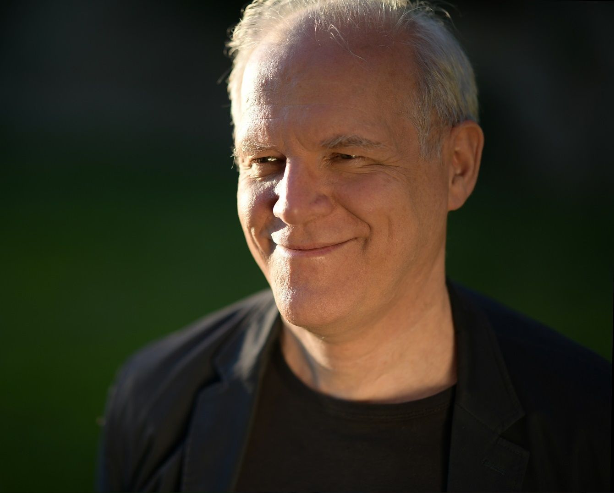

纪念Demailly先生
这是Jean-Pierre Demailly的中文纪念网页。
Jean-Pierre Demailly (1957-2022) 是法国数学家，其研究领域包括复分析、复几何、代数几何。Demailly 就读于巴黎高等师范学院 (1975届)，受Henri Skoda指导在1978年获得博士(Thèse de 3ème Cycle)，在1982年获得国家博士（Thèse de Doctorat d'Etat）。他于1983年起成为格勒诺布尔大学(傅立叶研究所)教授。
Demailly 于1994当选为法国科学院通讯院士，于2007起成为法国科学院院士。他曾经两次在国际数学家大会作报告（1994，2006）。他的书“Complex analytic and differential geometry”是多复变和复几何领域里最经典重要的教材之一。他一生中教授培养了20多位学生(其中不少已经成为著名数学家)，并且资助了更多的年轻数学工作者。
Jean-Pierre Demailly的个人主页.
Institut Fourier为Jean-Pierre Demailly创建的纪念网页.